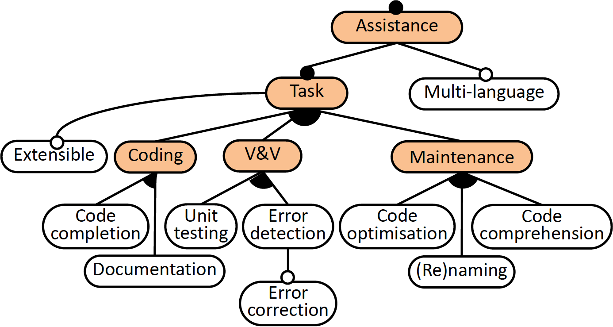
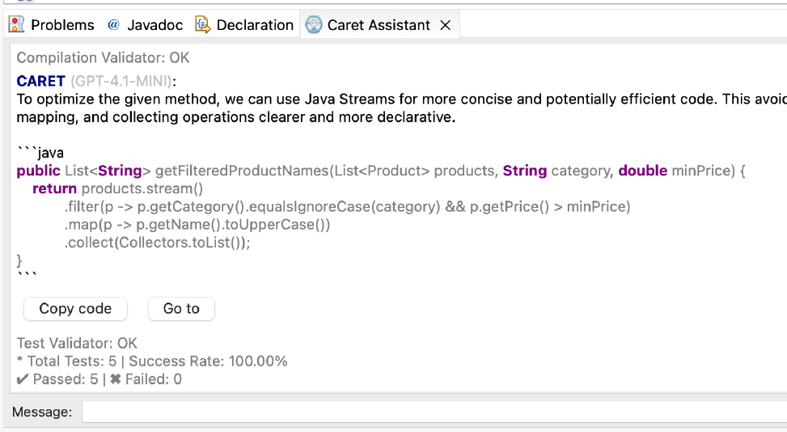

Assistance tasks
Assistance tasks represent the programming tasks supported by the assistant. These tasks require the retrieval of parameters defined in their configuration, as well as the necessary context information, which is then sent to the LLM agent for processing. Furthermore, these tasks can go through validation cycles and finally deploy the corresponding defined actions to complete a given task. Developers can easily add new assistance tasks using an extension point. CARET offers a series of pre-built assistance tasks, which can be grouped into:
– Code completion: CARET is able to create a new project with the given name, a new
class or interface with the given name in the current project, a class implementing a
given interface, or a subclass of a given abstract class. It can also generate the code
of a method, for which the user must provide either a description of the method, or
the method name and its parameters.
– Documentation: It generates the Javadoc comments for a complete Java file. If the
user does not provide a file but a code fragment, it can generate either Javadoc
comments or line-by-line comments for the code.
– Unit testing: It creates a JUnit test for a given class.
– Error detection and correction: It can help detect simple semantic errors and propose
corrections. Both functionalities rely solely on GPT (i.e., the assistant does
not integrate analysis or error detection/fix methods developed ad-hoc for Java).
– Code optimisation: CARET provides four optimisation options for a selected code
fragment: efficiency improvement, readability improvement, complexity reduction,
or general optimisation.
– Code comprehension: It produces an explanation in natural language of a selected
piece of code.

Validation Tasks
CARET allows you to configure validation tasks for each assistance task. These validation tasks enable the application of improvement cycles. CARET supports two types of validation:
- Pre-validation: This validation is performed upon receiving the response from the LLM agent, before displaying it to the user. If the received proposal passes validation (e.g., Compilation), it is shown to the user for them to decide whether to accept or reject the proposal.
- Post-validation: This validation is performed after the user has accepted the proposal and it has been applied to the code. The validation is then executed, for example, a JUnit test to verify the validity of the proposal.
These validations can be performed iteratively, according to the number of iterations defined by the user. This allows the user to obtain functional and valid code proposals.

Statistics
CARET records the interaction between the assistant and the user, including the suggestions provided by the assistant. To do this, the assistant stores this information in a MongoDB database using the proposed traceability model.
Users can view statistical information extracted from the stored interactions data across different views. The available views show the information grouped by::
- Task: Groups the project elements that used a specific task.
- Agent: Shows the LLM agents used in the project and the required tasks.
- Project: Shows the project’s package structure displaying classes and methods used by the support tasks.
- Coverage: Shows tasks coverage rate per unit of use (class or method) relative to the entire project.
- User: Groups task usage by user.

Collaboration Support
CARET offers collaborative support for development teams from two perspectives:
- Shared traceability model: This enables to see which team members are using CARET, including information on requested tasks, the agents used, and when and where in the project they implemented the received suggestions.